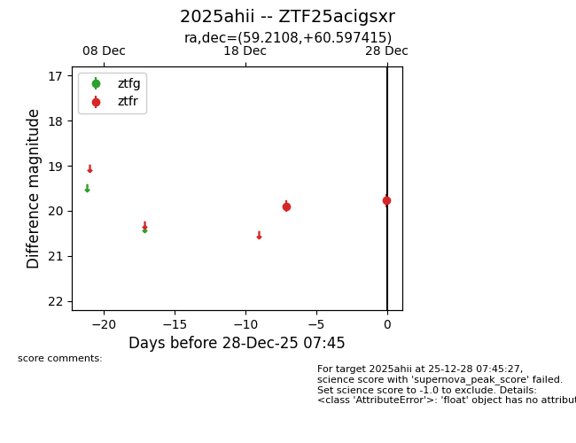
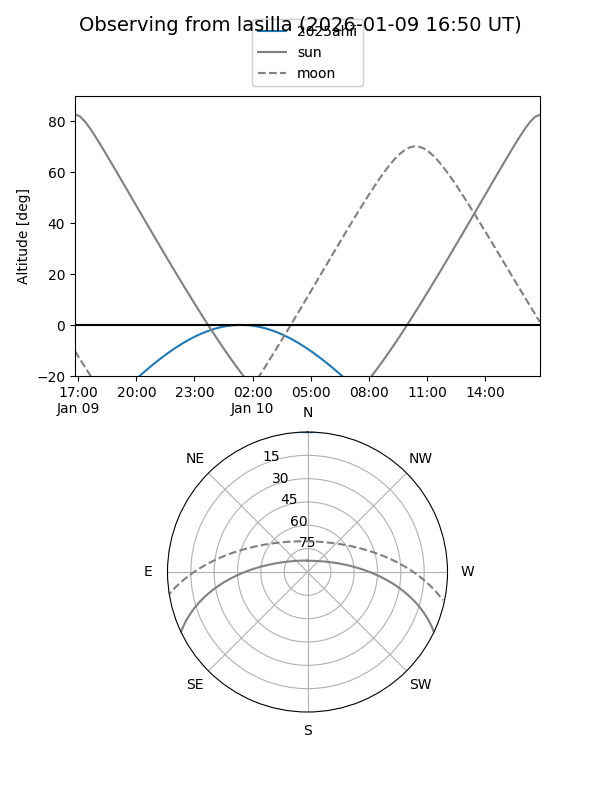
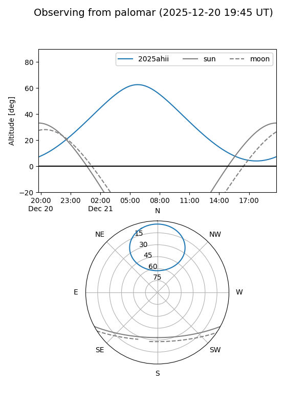
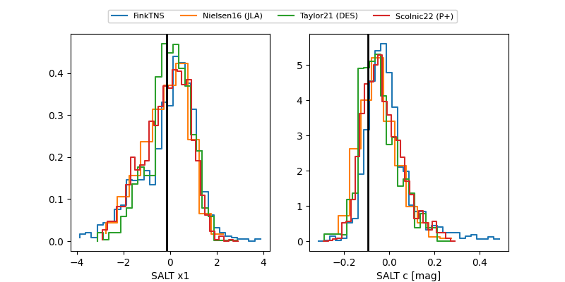

2025ahii
Target 2025ahii at 2025-12-21 05:29
Aliases and brokers:
FINK: fink-portal.org/ZTF25acigsxr
Lasair: lasair-ztf.lsst.ac.uk/objects/ZTF25acigsxr
ALeRCE: alerce.online/object/ZTF25acigsxr
TNS: wis-tns.org/object/2025ahii
YSE: ziggy.ucolick.org/yse/transient_detail/2025ahii
alt names
ZTF25acigsxr (ztf,fink_ztf)
2025ahii (tns,yse)
Coordinates:
equatorial (ra, dec) = 59.2108,+60.59742
equatorial (HMS+DMS) = 03:56:50.60,+60:35:50.70
galactic (l, b) = (143.8404,+5.48948)
Flags:
Photometry:
last ztfr=19.90
1 ztfr detections
Lightcurve

Visibility


Additional plots
